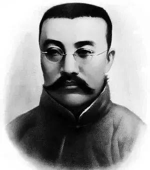
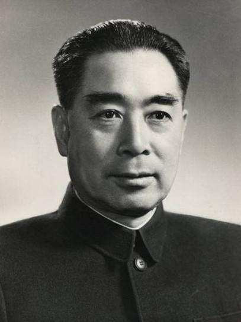

首页
历史事件
历史会议
历史人物
党的一百年历史
我们现在必须完全保持党的纪律，否则一切都会陷入淤泥中。--马克思
历史人物

李大钊
1889年10月29日-1927年4月28日），字守常，河北乐亭人。 1907年考入天津北洋法政专门学校 ，1913年毕业后东渡日本，入东 京早稻田大学政治本科学习 ，是中国共产主义运动的先驱，伟大的马 克思主义者，杰出的无产阶级革命家，中国共产党的主要创始人之一。 李大钊同志一生的奋斗历程，同马克思主义在中国传播的历史紧密相连 ，同中国共产党创建的历史紧密相连，同中国共产党领导的为中国人民 谋幸福的历史紧密相连 。 2019年10月27日，纪念李大钊同志诞辰130周年座谈会在京举行 。会 议纪念李大钊同志诞辰130周年，回顾神州大地发生的历史性变化，怀念 李大钊同志等老一辈革命家为民族独立和人民解放、国家富强和人民幸福 建立的不朽功勋 。 2021年4月28日，俄罗斯保存的李大钊生前唯一影像公布。
毛泽东
（1893年12月26日-1976年9月9日），字润之（原作咏芝，后改润芝），笔名子任。湖南湘潭人。 中国人民的领袖，伟大的马克思主义者，无产阶级革命家、战略家和理论家，中国共产党、中国人民解放 军和中华人民共和国的主要缔造者和领导人，政治家，军事家，诗人，书法家。

周恩来
（1898年3月5日-1976年1月8日） ，字翔宇，曾用名飞飞、伍豪、少山、冠生等，原籍浙江绍兴 ，1898年3月5日生于江苏淮安。1921年加入中国共产党，是伟大的马克思主义者，伟大的无产阶级革命家、 政治家、军事家、外交家，党和国家主要领导人之一，中国人民解放军主要创建人之一，中华人民共和国的 开国元勋，是以毛泽东同志为核心的党的第一代中央领导集体的重要成员。
陈独秀
（1879年10月9日-1942年5月27日），原名陈庆同，陈乾生，字仲甫，号实庵，安徽怀宁人， 新文化运动的倡导者、发起者和主要旗手，“五四运动的总司令”，中国共产党的主要创始人之一和党 早期主要领导人。
张国焘
（1897年11月26日-1979年12月3日），又名特立，江西萍乡人， 中国共产党创始人之一、五四运动的学生领袖、中共建党初期的高级领导人。
李达
（1905年4月19日—1993年7月12日），原名李德三，陕西省眉县人。早年参加 爱国学生运动。后考入冯玉祥的西北军第二军官学校，毕业后任国民革命军排长、连长 。1931年12月参加宁都起义。1932年加入中国共产党，历任中国工农红军连长、师参 谋长、军参谋处处长、军团参谋长等职，参加湘赣苏区反“围剿”，参与创建湘鄂川黔苏 区和长征。抗美援朝期间，任中国人民志愿军参谋长。
朱德
（1886年12月1日-1976年7月6日），字玉阶，原名朱代珍，曾用名朱建德， 伟大的马克思主义者，伟大的无产阶级革命家、政治家、军事家，中国人民 解放军的主要缔造者之一，中华人民共和国的开国元勋，是以毛泽东同志为 核心的党的第一代中央领导集体的重要成员。 建国初期，兼任中共中央纪律检查委员会书记，为加强执政党的建设，维护党 的组织纪律，克服党内各种不良倾向，保持党的优良作风，进行了大量卓有成 效的工作。他还多次出国访问、会见外国领导人，增进了中国人民和各国人民 的友谊。
彭德怀
（1898年10月24日-1974年11月29日），男，原名得华，号石穿，出生于 湖南省湘潭县彭家围子。中华人民共和国开国元帅，无产阶级革命家，军事家，政 治家，中国人民解放军创建人和领导人之一。 彭德怀于1928年加入中国共产党，第二次国内革命战争时期担任中国工农红军师长、 军长、三军团总指挥，中共中央军事委员会副主席；长征后期担任过陕甘支队司令员 ；到达陕北以后，担任过红军前敌总指挥。抗日战争时期，担任八路军副总司令，中 共中央北方局代理书记。解放战争时期，担任中国人民解放军副总司令、第一野战军 司令员兼政治委员。新中国成立以后，先后担任中共中央西北局第一书记，西北军政 委员会主席，中共中央军事委员会副主席，中央人民政府革命军事委员会副主席，中 国人民志愿军司令员兼政治委员，国防委员会副主席，国务院副总理兼国防部长，建 设大三线副总指挥。他曾任党的第六届、第七届、第八届中央委员会委员、政治局委 员。他还当选为第一届和第二届全国人民代表大会代表。
孙中山
（1866年11月12日-1925年3月12日），名文，字载之，号日新，又号逸仙，又名帝象， 化名中山樵，伟大的民族英雄、伟大的爱国主义者、中国民主革命的伟大先驱 ，中华民 国和中国国民党的缔造者，三民主义的倡导者，创立了《五权宪法》。他首举彻底反帝反 封建的旗帜，“起共和而终两千年封建帝制”。 孙中山1866年11月12日生于广东省广州府香山县（今中山市）翠亨村。孙中山原在香港 学医，并成为西医医师。鸦片战争后，孙中山目睹中华民族有被西方列强瓜分的危险，决 定抛弃“医人生涯”，进行“医国事业”。孙中山早期受郑观应的改良思想影响，后看清了 清政府的腐败，决心推翻清王朝，建立民主共和国。 1894年11月24日，孙中山在檀香山创立兴中会 。1905年（光绪三十一年）成立中国 同盟会。1911年10月10日（宣统三年）新军中的革命党人暗中联络，决定当天晚上起义 。辛亥革命后被推举为中华民国临时大总统（任期1912年1月1日——1912年4月1日）。 1925年3月12日，孙中山因癌症在北京逝世。1929年6月1日，根据其生前遗愿，葬于南 京紫金山中山陵。1940年，国民政府通令全国，尊称其为“中华民国国父”。
刘少奇
（1898年11月24日-1969年11月12日），生于湖南省宁乡县，伟大的马克思主义者，伟大的 无产阶级革命家、政治家、理论家，党和国家主要领导人之一，中华人民共和国开国元勋，是 以毛泽东同志为核心的党的第一代中央领导集体的重要成员。 刘少奇同志为党和人民事业奋斗了一生，在新民主主义革命、社会主义革命和社会主义建设各个 历史时期都作出了重大贡献，为党和人民建立了丰功伟绩，受到全党全军全国各族人民衷心爱戴。
瞿秋白
（1899年1月29日—1935年6月18日），本名双，后改瞿爽、瞿霜，字秋白，生于江苏常州。 中国共产党早期主要领导人之一，伟大的马克思主义者，卓越的无产阶级革命家、理论家和 宣传家，中国革命文学事业的重要奠基者之一。 1917年秋考入北京俄文专修馆学习。1922年春，正式加入中国共产党。1923年，主编中共 中央另一机关刊物《前锋》，参加编辑《向导》。 1925年，先后在中共第四、五、六次全 国代表大会上当选为中央委员、中央局委员和中央政治局委员，成为中共领袖之一。1927年 2月7日，自编《瞿秋白论文集》。1934年任中华苏维埃共和国中央执委会委员、人民教育委 员会委员、中华苏维埃共和国中央政府教育部部长等职。
邓小平
（1904年8月22日-1997年2月19日），原名邓先圣，学名邓希贤，四川广安人。早年赴欧 洲勤工俭学，归国后，他全身心地投入党领导的争取民族独立和人民解放的革命斗争。从土 地革命、抗日战争到解放战争，先后担任党和军队的许多重要领导职务，为党中央一系列重 大战略决策的实施，为新民主主义革命的胜利和新中国的诞生，建立了赫赫功勋，成为中华 人民共和国的开国元勋。 邓小平是全党全军全国各族人民公认的享有崇高威望的卓越领导人，伟大的马克思主义者， 伟大的无产阶级革命家、政治家、军事家、外交家，久经考验的共产主义战士，中国社会主 义改革开放和现代化建设的总设计师，中国特色社会主义道路的开创者，邓小平理论的主要 创立者。
 历史人物
历史人物